A quick tutorial to run scMINER
Qingfei Pan
2024-09-20
quick_tutorial.RmdWelcome to the quick tutorial of scMINER! This tutorial aims to provide immediate and practical guidance on running scMINER with your own data. For full functionality and detailed documentation of scMINER, please refer to the Full Documentation. In this tutorial, we will walk through the core analysis of scMINER step-by-step using a ground truth dataset called PBMC14k.
Data preprocessing
Create project space
The project space created by scMINER is a folder that can not only keep your data centralized and organized but also make the scMINER pipeline more smooth and robust. We encourge you to create a project space for each of your studies.
scminer_dir <- createProjectSpace(project_dir = "/your-path", project_name = "PBMC14k")This creates a folder named PBMC14k in
the directory of /your-path, and creates
four subfolders in it:
-
DATA: to save the sparse eSet objects and other files; -
MICA: to save the inputs and outputs of mutual information-based clustering analysis; -
SJARACNe: to save the inputs and outputs of network inference and quality control; -
PLOT: to save the files of data visualization.
Generate gene expression matrix
scMINER provides four functions to generate gene expression matrix from multiple-format inputs:
## Input type 1: Data directory by 10x Genomics, containing matrix.mtx, barcodes.tsv and features.tsv (or genes.tsv)
demo1_mtx <- readInput_10x.dir(input_dir = system.file("extdata/demo_inputs/cell_matrix_10x", package = "scMINER"),
featureType = "gene_symbol", removeSuffix = TRUE, addPrefix = "demo1")
## Input type 2: Text-table file, eg. txt, tsv, csv
demo2_mtx <- readInput_table(table_file = system.file("extdata/demo_inputs/table_file/demoData2.txt.gz", package = "scMINER"),
is.geneBYcell = TRUE, # set is.geneBYcell = FALSE to read features in columns and cells in rows
sep = "\t", removeSuffix = TRUE, addPrefix = "demo2")
## Input type 3: HDF5 file by 10x Genomics
demo2_mtx <- readInput_10x.h5(h5_file = system.file("extdata/demo_inputs/hdf5_10x/demoData2.h5", package = "scMINER"),
featureType = "gene_symbol", removeSuffix = TRUE, addPrefix = "demo3")
## Input type 4: H5AD file
demo4_obj <- readInput_h5ad(h5ad_file = system.file("extdata/demo_inputs/h5ad_file/demoData4.h5ad", package = "scMINER"),
removeSuffix = TRUE, addPrefix = "demo4")The raw count matrix of PBMC14k dataset is embedded in scMINER and can be easily fetched by:
## load the raw count matrix of PBMC14k dataset
data("pbmc14k_rawCount")
dim(pbmc14k_rawCount)
#> [1] 17986 14000
pbmc14k_rawCount[1:5,1:4]
#> 5 x 4 sparse Matrix of class "dgCMatrix"
#> CACTTTGACGCAAT GTTACGGAAACGAA AGTCACGACAGGAG TTCGAGGACCAGTA
#> AL627309.1 . . . .
#> AP006222.2 . . . .
#> RP11-206L10.3 . . . .
#> RP11-206L10.2 . . . .
#> RP11-206L10.9 . . . .Create SparseEset object
The SparseExpressionSet (or
SparseEset for short) is a new class
created by scMINER to handle the sparsity in scRNA-seq data. It is
derived from ExpressionSet,
and enables to compress, store and access efficiently and conveniently.
The SparseEset object is the center of scRNA-seq data
analysis by scMINER.
The SparseEset object can be easily created from the gene expression matrix:
## Create SparseEset object solely from gene expression matrix, meta data is automatically added
pbmc14k_raw.eset <- createSparseEset(input_matrix = pbmc14k_rawCount, projectID = "PBMC14k", addMetaData = TRUE)createSparseEset() offers an argument,
addMetaData, to automatically generate and add 5 meta data
statistics for cells and genes into the SparseEset object. It also
provides another two arguments, cellData and
featureData, to allow you add your customized
phenoData or featureData. In this case, we
have the true labels of cell types and would like to add them to the
SparseEset object:
## Read the true lables of cell types embedded in scMINER R package
true_label <- read.table(system.file("extdata/demo_pbmc14k/PBMC14k_trueLabel.txt.gz", package = "scMINER"), header = T, row.names = 1, sep = "\t", quote = "", stringsAsFactors = FALSE)
## Create SparseEset object with self-customized metadata
pbmc14k_raw.eset <- createSparseEset(input_matrix = pbmc14k_rawCount, cellData = true_label, featureData = NULL, projectID = "PBMC14k", addMetaData = TRUE)
#> Creating sparse eset from the input_matrix ...
#> Adding meta data based on input_matrix ...
#> Done! The sparse eset has been generated: 17986 genes, 14000 cells.
head(pData(pbmc14k_raw.eset))
#> trueLabel_full trueLabel projectID nUMI nFeature pctMito
#> CACTTTGACGCAAT CD14+ Monocyte Monocyte PBMC14k 764 354 0.01832461
#> GTTACGGAAACGAA CD14+ Monocyte Monocyte PBMC14k 956 442 0.01569038
#> AGTCACGACAGGAG CD14+ Monocyte Monocyte PBMC14k 7940 2163 0.01977330
#> TTCGAGGACCAGTA CD14+ Monocyte Monocyte PBMC14k 4177 1277 0.01149150
#> CACTTATGAGTCGT CD14+ Monocyte Monocyte PBMC14k 629 323 0.02066773
#> GCATGTGATTCTGT CD14+ Monocyte Monocyte PBMC14k 875 427 0.02628571
#> pctSpikeIn CellID
#> CACTTTGACGCAAT 0 CACTTTGACGCAAT
#> GTTACGGAAACGAA 0 GTTACGGAAACGAA
#> AGTCACGACAGGAG 0 AGTCACGACAGGAG
#> TTCGAGGACCAGTA 0 TTCGAGGACCAGTA
#> CACTTATGAGTCGT 0 CACTTATGAGTCGT
#> GCATGTGATTCTGT 0 GCATGTGATTCTGT
table(pData(pbmc14k_raw.eset)$trueLabel_full)
#>
#> CD14+ Monocyte CD19+ B
#> 2000 2000
#> CD4+/CD25 T Reg CD4+/CD45RA+/CD25- Naive T
#> 2000 2000
#> CD4+/CD45RO+ Memory CD56+ NK
#> 2000 2000
#> CD8+/CD45RA+ Naive Cytotoxic
#> 2000If you have multiple samples for one project, please create one SparseEset object for each of the samples and combined these SparseEset objects into one:
## Create SparseEset from multiple samples
# Step 1: create an SparseEset for each sample
demo1_mtx <- readInput_10x.dir(input_dir = system.file("extdata/demo_inputs/cell_matrix_10x", package = "scMINER"),
featureType = "gene_symbol", removeSuffix = TRUE)
demo1.eset <- createSparseEset(input_matrix = demo1_mtx, addMetaData = TRUE)
demo2_mtx <- readInput_table(table_file = system.file("extdata/demo_inputs/table_file/demoData2.txt.gz", package = "scMINER"),
is.geneBYcell = TRUE, sep = "\t", removeSuffix = TRUE)
demo2.eset <- createSparseEset(input_matrix = demo2_mtx, addMetaData = TRUE)
# Step 2: combine the SparseEset objects of all samples
combined.eset <- combineSparseEset(eset_list = c(demo1.eset, demo2.eset),
projectID = c("sample1", "sample2"),
addPrefix = c("demo1", "demo2"),
addSurfix = NULL, addMetaData = TRUE, imputeNA = TRUE)Filter SparseEset object
As we mentioned before, scMINER can automatically generate and add 5 meta data statistics to SparseEset object. These 5 meta data statistics are the metrics scMINER uses to assess the quality of cells and features:
- For cell quality assessment, scMINER provides 4 metrics that commonly
used by the community:
- nUMI: number of total UMIs in each cell. Cells with abnormally high nUMI usually indicate doublets, while those with abnormally low nUMI usually indicate poorly sequenced cells or empty droplets.
- nFeature: number of expressed features/genes in each cell. Similar to nUMI.
- pctMito: percentage of UMIs of mitochondrial genes (defined by “mt-|MT-”) in each cell. Cells with aberrantly high pctMito usually indicate dying cells.
- pctSpikeIn: percentage of UMIs of spike-in RNAs (defined by “ERCC-|Ercc-”)) in each cell. This is used to estimate the normalization factor. Cells with extremely high or low pctSpikeIn need to be removed.
- For feature quality assessment, scMINER provides one metrics:
- nCell: number of cells expressing the features/genes. Genes with extremely low nCell are poorly sequenced and are usually of low variance.
To help assess the data quality and determine the cutoffs used for filtration, scMINER can generate a html-format QC report:
## To generate QC report from SparseEset object
drawSparseEsetQC(input_eset = pbmc14k_raw.eset, output_html_file = "/your-path/PBMC14k/PLOT/pbmc14k_rawCount.html", overwrite = FALSE)
## scMINER also supports group-specific QC highlights
drawSparseEsetQC(input_eset = pbmc14k_raw.eset, output_html_file = "/your-path/PBMC14k/PLOT/pbmc14k_rawCount.html", overwrite = FALSE, group_by = "trueLabel")This QC report contains a variety of tables and plot of the key statistics of your data that can help you get a better sense about data quality and determine the cutoffs for filtration.
scMINER provides two modes to perform SparseEset object filtration:
-
auto: in this mode, the filtration cutoffs are automatically generated by scMINER inMedian ± 3*MAD(maximum absolute deviation) method. This mode works well in the majority of our test datasets. -
manual: in this mode, you can manually specify the cutoffs, both low and high, of all 5 metrics. No cells or features would be removed under the default cutoffs of each metrics.
To apply the auto mode in SparseEset
filtration:
## Filter SparseEset object with the cutoffs automatically generated by scMINER
pbmc14k_filtered.eset <- filterSparseEset(pbmc14k_raw.eset, filter_mode = "auto", filter_type = "both")
#> Checking the availability of the 5 metrics ('nCell', 'nUMI', 'nFeature', 'pctMito', 'pctSpikeIn') used for filtration ...
#> Checking passed! All 5 metrics are available.
#> Filtration is done!
#> Filtration Summary:
#> 8846/17986 genes passed!
#> 13605/14000 cells passed!
#>
#> For more details:
#> Gene filtration statistics:
#> Metrics nCell
#> Cutoff_Low 70
#> Cutoff_High Inf
#> Gene_total 17986
#> Gene_passed 8846(49.18%)
#> Gene_failed 9140(50.82%)
#>
#> Cell filtration statistics:
#> Metrics nUMI nFeature pctMito pctSpikeIn Combined
#> Cutoff_Low 458 221 0 0 NA
#> Cutoff_High 3694 Inf 0.0408 0.0000 NA
#> Cell_total 14000 14000 14000 14000 14000
#> Cell_passed 13826(98.76%) 14000(100.00%) 13778(98.41%) 14000(100.00%) 13605(97.18%)
#> Cell_failed 174(1.24%) 0(0.00%) 222(1.59%) 0(0.00%) 395(2.82%)This command generates a filtered SparseEset object
pbmc14k_filtered.eset and returns a summary table with
detailed information of filtration statistics. You can refer to it and
adjust the cutoffs accordingly.
In some cases, you may find that most of the cutoffs generated by the auto mode are good, except one or two. Though there is no ‘hybrid’ mode, scMINER does allow you to customize some of the cutoffs generated by the auto mode. This can be easily done by adding the cutoffs you would customize under the auto mode:
## Filter eSet under the auto mode, with customized values
pbmc14k_filtered.eset <- filterSparseEset(pbmc14k_raw.eset, filter_mode = "auto", filter_type = "both", gene.nCell_min = 5)If the cutoffs generated in auto model do not work well in your case and you would like to go with self-customized cutoffs, you can easily apply them by:
## Filter SparseEset object with self-customized cutoffs
pbmc14k_filtered.eset <- filterSparseEset(pbmc14k_raw.eset, filter_mode = "manual", filter_type = "both", gene.nCell_min = 10, cell.nUMI_min = 500, cell.nUMI_max = 6500, cell.nFeature_min = 200, cell.nFeature_max = 2500, cell.pctMito_max = 0.1)Normalize SparseEset object
scMINER recommends the log2CPM method
for normalization: the raw counts in each cell are normalized to a
library size of 1 million, followed by log2 transformation.
pbmc14k_log2cpm.eset <- normalizeSparseEset(pbmc14k_filtered.eset, scale_factor = 1000000, log_base = 2, log_pseudoCount = 1)
#> Done! The data matrix of eset has been normalized and log-transformed!
#> The returned eset contains: 8846 genes, 13605 cells.This normalized and log-transformed SparseEset object can be directly used for Mutual Information-based clustering, network inference and other downstream analysis. And it’s recommended to save it into the project space.
saveRDS(pbmc14k_log2cpm.eset, file = "/your-path/PBMC14k/DATA/pbmc14k_log2cpm.rds")MI-based clustering analysis
MICA (Mutual Information-based Clustering Analysis) is a clustering tool designed for scRNA-seq data. It is developed with Python to take it’s strengths in calculation speed and memory consumption. As a component of scMINER framework, MICA works seamlessly with the scMINER R package and SparseEset object.
Generate MICA input
The standard input of MICA is a normalized and log-transformed gene expression matrix. scMINER can generate this matrix from SparseEset object and save it into a file that can be directly read by MICA.
scMINER uses .txt as the default input
file format. It can by generated by:
MICA accepts .h5ad or .txt format as the
input file, which can be easily generated by embedded function
generateMICAinput():
## Generate MICA input in txt format
generateMICAinput(input_eset = pbmc14k_log2cpm.eset, output_file = "/your-path/PBMC14k/MICA/micaInput.txt", overwrite = FALSE)
## Check the format of MICA input
mica_input <- read.delim(system.file("extdata/demo_pbmc14k/MICA/micaInput.txt", package = "scMINER"), header = T, sep = "\t", row.names = 1)
mica_input[1:5,1:5]scMINER also supports .h5ad as the
input file format which is getting more popular in scRNA-seq data
storage and sharing. It can by generated by:
## Generate MICA input in h5ad format
generateMICAinput(input_eset = pbmc14k_log2cpm.eset, output_file = "/your-path/PBMC14k/MICA/micaInput.h5ad", overwrite = FALSE)In addition to generating the standard MICA input file,
generateMICAinput() also returns the recommended commands
of running MICA. You can copy the commands, modify accordingly and
run.
Run MICA
MICA features two different modes named by their different dimension reduction techniques:
- Multi-Dimensional Scaling (MDS) mode: this mode is more accurate and robust for small datasets (less than 5,000 cells, be default) due to its global dimension reduction nature;
- Graph Embedding (GE) mode: this mode works better with large datasets (more than 5,000 cells, by default) using a graph embedding approach to explore distant neighbor cells.
To run MDS model:
The MDS model uses K-Means by default
for clustering. The argument -nck above specifies the
number of cluster for K-Means.
In this case, since there are 13,605 cells, we will use the
GE mode for the clustering:
mica ge -i /your-path/PBMC14k/MICA/micaInput.txt -o /your-path/PBMC14k/MICA/GE -minr 0.1 -maxr 9.0 -ss 0.05 -nw 40The GE mode uses Louvain for
clustering. The command above will generate the clustering results of
multiple resolutions, from 0.1 to 9.0, with a step size of 0.05.
Add MICA output to SparseEset object
MICA generates several files and save all of them in the output
directory specified by the user with -o argument. The core,
and only, output file we need for subsequent analysis is the clustering
label file named in the format of
ProjectName_clustering_VisualizeMethod_euclidean_NumberOfDimensions_Resolution.txt.
In this case, since we used a range of resolutions, there are several
clustering label files generated, one for each resolution. Based on the
knowledge about PBMC14k dataset, we compared the results of different
resolutions and picked
clustering_UMAP_euclidean_20_2.05.txt for subsequent
analysis.
## Read the selected MICA output file
micaOutput <- read.table(system.file("extdata/demo_pbmc14k/MICA/clustering_UMAP_euclidean_20_2.05.txt", package = "scMINER"), header = TRUE, sep = "\t", quote = "", stringsAsFactors = F)
head(micaOutput)
#> ID X Y label
#> 1 CACTTTGACGCAAT 14.91650 13.04096 6
#> 2 GTTACGGAAACGAA 14.57031 10.27093 6
#> 3 CACTTATGAGTCGT 14.28869 13.61674 6
#> 4 GCATGTGATTCTGT 14.12546 13.36319 6
#> 5 TAGAATACGTATCG 14.91227 11.19407 6
#> 6 CAAGAAGACCCTCA 15.34154 12.25821 6As shown above, the clustering label file contains four columns:
-
ID: cell barcodes; -
X: coordinates of UMAP_1 or tSNE_1; -
Y: coordinates of UMAP_2 or tSNE_2; -
label: labels of predicted clusters.
The clustering result can be easily easily added to the SparseEset
object by addMICAoutput():
## Add MICA output into SparseEset object
pbmc14k_clustered.eset <- addMICAoutput(input_eset = pbmc14k_log2cpm.eset,
mica_output_file = system.file("extdata/demo_pbmc14k/MICA/clustering_UMAP_euclidean_20_2.05.txt", package = "scMINER"),
visual_method = "umap") # use "tsne" if t-SNE was used in MICA
head(pData(pbmc14k_clustered.eset))
#> trueLabel_full trueLabel projectID nUMI nFeature pctMito
#> CACTTTGACGCAAT CD14+ Monocyte Monocyte PBMC14k 764 354 0.01832461
#> GTTACGGAAACGAA CD14+ Monocyte Monocyte PBMC14k 956 442 0.01569038
#> CACTTATGAGTCGT CD14+ Monocyte Monocyte PBMC14k 629 323 0.02066773
#> GCATGTGATTCTGT CD14+ Monocyte Monocyte PBMC14k 875 427 0.02628571
#> TAGAATACGTATCG CD14+ Monocyte Monocyte PBMC14k 1060 445 0.03207547
#> CAAGAAGACCCTCA CD14+ Monocyte Monocyte PBMC14k 849 384 0.01531213
#> pctSpikeIn CellID UMAP_1 UMAP_2 clusterID
#> CACTTTGACGCAAT 0 CACTTTGACGCAAT 14.91650 13.04096 6
#> GTTACGGAAACGAA 0 GTTACGGAAACGAA 14.57031 10.27093 6
#> CACTTATGAGTCGT 0 CACTTATGAGTCGT 14.28869 13.61674 6
#> GCATGTGATTCTGT 0 GCATGTGATTCTGT 14.12546 13.36319 6
#> TAGAATACGTATCG 0 TAGAATACGTATCG 14.91227 11.19407 6
#> CAAGAAGACCCTCA 0 CAAGAAGACCCTCA 15.34154 12.25821 6It’s optional but recommend to save the SparseEset object with clustering resluts added:
saveRDS(pbmc14k_clustered.eset, file = "/your-path/PBMC14k/DATA/pbmc14k_clustered.eset")Visulize MICA output
scMINER provides a function, MICAplot() to easily
visualize the clustering results on a 2D plot, UMAP or tSNE. And it can
be colored by multiple variables, including cluster
label, sample source, nUMI,
nFeature, pctMito and more.
To visualize the clustering results:
MICAplot(input_eset = pbmc14k_clustered.eset, color_by = "clusterID", X = "UMAP_1", Y = "UMAP_2", point.size = 0.1, fontsize.cluster_label = 6)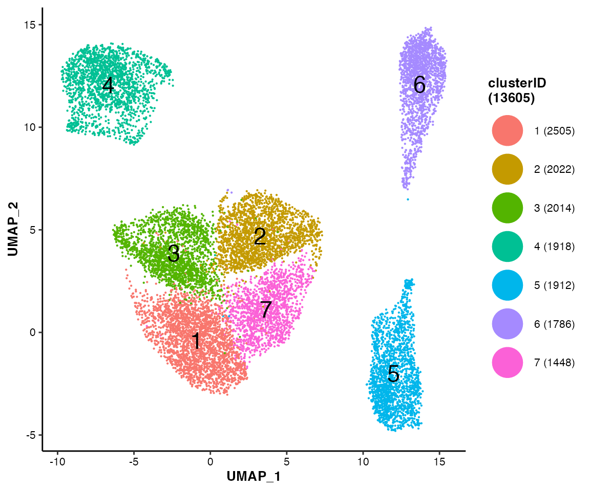
To visualize the true labels of cell types:
MICAplot(input_eset = pbmc14k_clustered.eset, color_by = "trueLabel", X = "UMAP_1", Y = "UMAP_2", point.size = 0.1, fontsize.cluster_label = 4)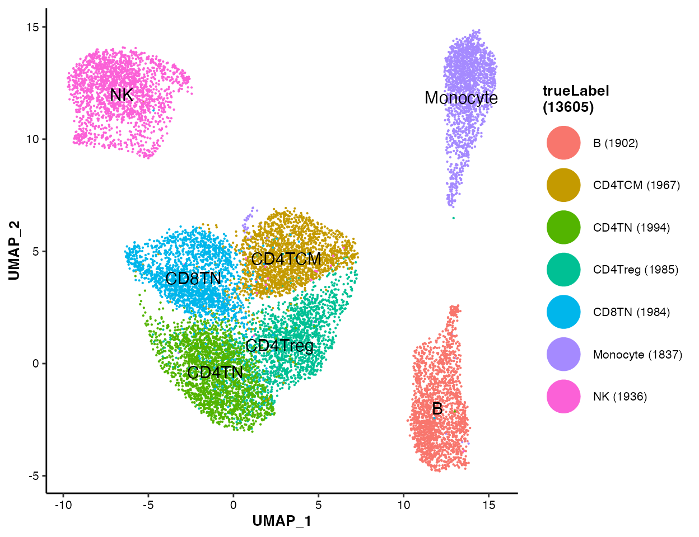
To visualize the nUMI on UMAP/t-SNE
plot:
MICAplot(input_eset = pbmc14k_clustered.eset, color_by = "nUMI", do.logTransform = TRUE, point.size = 0.1)
#> The values in "nUMI" have been transformed by log2(value + 1). To turn transformation off, set do.logTransform = FALSE.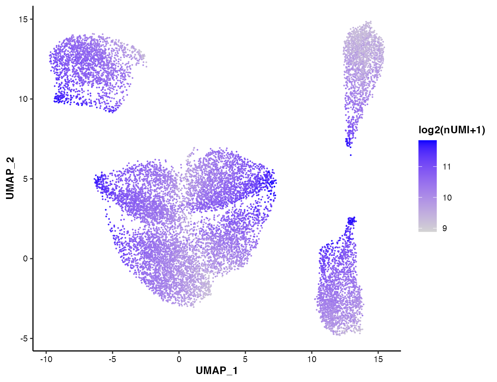
You can also visualize the nFeature
pctMito and
pctSpikeIn:
MICAplot(input_eset = pbmc14k_clustered.eset, color_by = "nFeature", do.logTransform = TRUE, point.size = 0.1)
#> The values in "nFeature" have been transformed by log2(value + 1). To turn transformation off, set do.logTransform = FALSE.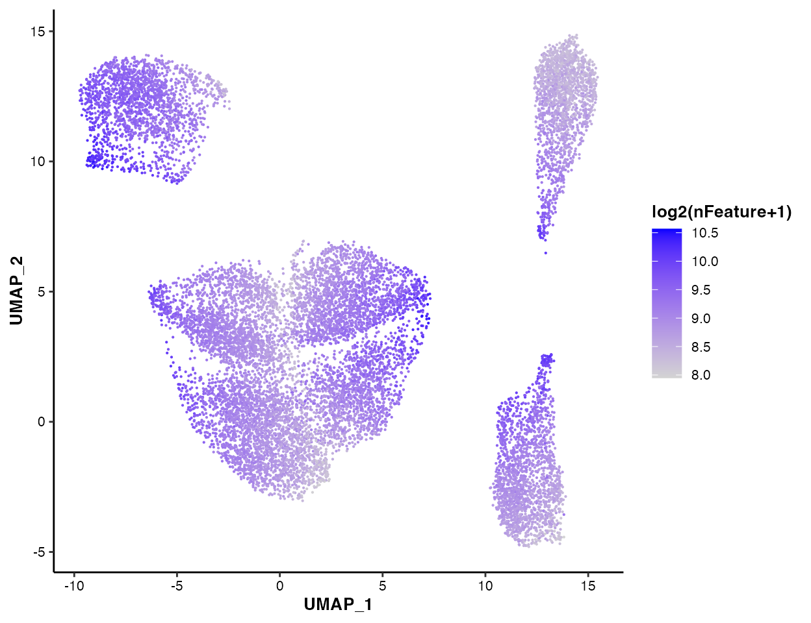
MICAplot(input_eset = pbmc14k_clustered.eset, color_by = "pctMito", do.logTransform = FALSE, point.size = 0.1)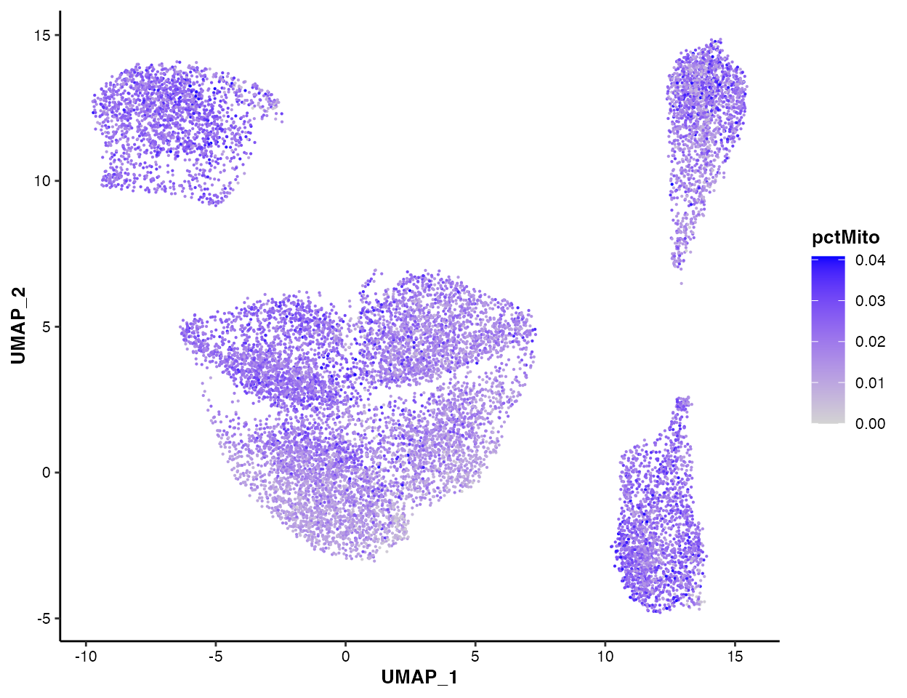
MICAplot(input_eset = pbmc14k_clustered.eset, color_by = "pctSpikeIn", do.logTransform = FALSE, point.size = 0.1)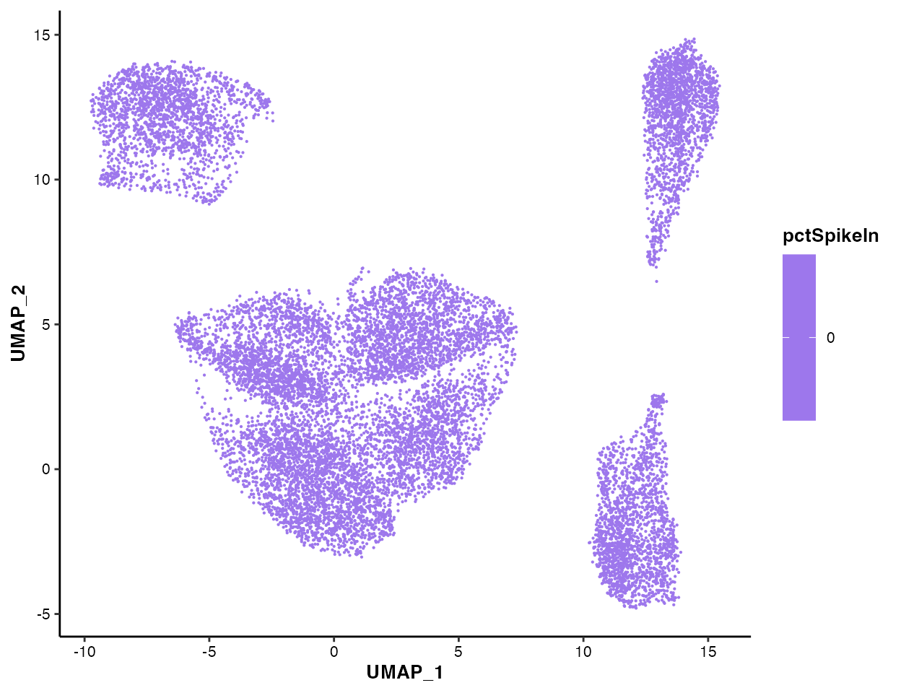
Cell type annotation
Currently, there are two types of strategies to annotate the clusters: supervised and unsupervised. The supervised methods use a list of known markers of potential cell types curated from some existing studies of the same/similar contexts. While in contrast, the unsupervised methods are usually based on the differentially expressed genes. scMINER provides several useful functions to support both types of strategies.
Supervised cell type annotation
In this showcase, we know the 7 cell types involved in the PBMC14k dataset, and curated a marker list from some existing PBMCs studies.
Using signature scores
Given a marker list of candidate cell types, scMINER can estimate a
signature score, which is mathematically
the weighted mean of the expression of marker genes involved,
for each candidate cell type across all cell cluster. To do so, you will
need to generate a signature table with three columns:
-
signature_name: name of cell types/signatures; -
signature_feature: markers genes/features of corresponding cell type/signature; -
weight: weight of corresponding maker/feature in corresponding cell type/signature. It ranges from -1 to 1, so both positive and negative markers are supported.
## Signature table of PBMC14k dataset
signature_table <- read.table(system.file("extdata/demo_pbmc14k/PBMC14k_signatureTable.txt", package = "scMINER"), header = TRUE, sep = "\t", quote = "", stringsAsFactors = FALSE)
head(signature_table)
#> signature_name signature_feature weight
#> 1 Monocyte CD14 1
#> 2 Monocyte LYZ 1
#> 3 Monocyte S100A8 1
#> 4 Monocyte S100A9 1
#> 5 Monocyte S100A12 1
#> 6 NK FCGR3A 1With this signature table, draw_bubbleplot() can
estimate the signature scores and visualize them using bubble plot:
## Bubble plot of signature scores across clusters
draw_bubbleplot(input_eset = pbmc14k_clustered.eset, signature_table = signature_table, group_by = "clusterID")
#> 31 features of 7 signatures were found in the input eset and will be used in calculation.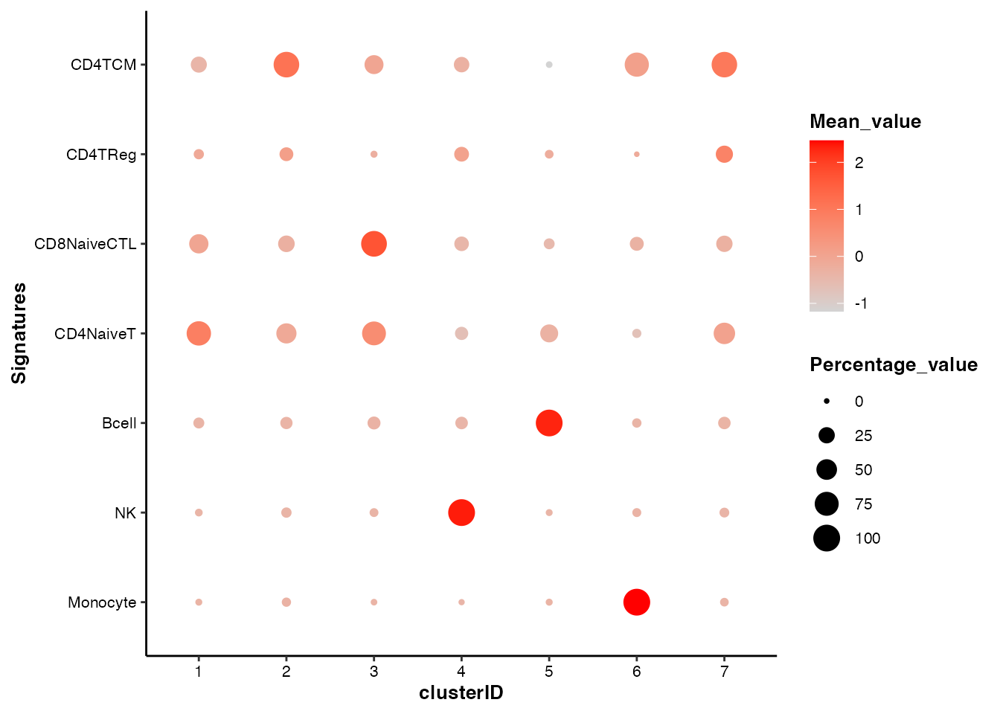
In the bubble plot above, the color of the bubbles is proportional to the mean of signature scores, and the size of the bubbles is proportional to the percentage of cells with higher signature score than mean.
Using individual marker genes
scMINER also provides a variety of functions to visualize the selected features:
## For the demonstration purposes, we picked two well known markers for each of the 7 known cell types, plus "CD3D" and "CD4".
genes_of_interest <-c("CD14", "LYZ", "GZMB", "NKG7", "CD19", "MS4A1", "CD8A", "CD8B", "SELL", "CCR7", "IL2RA", "FOXP3", "IL7R", "S100A4", "CD3D", "CD4")feature visualization: violin plot
## Violin plot of marker genes across clusters
feature_vlnplot(input_eset = pbmc14k_clustered.eset, features = genes_of_interest, group_by = "clusterID", ncol = 4)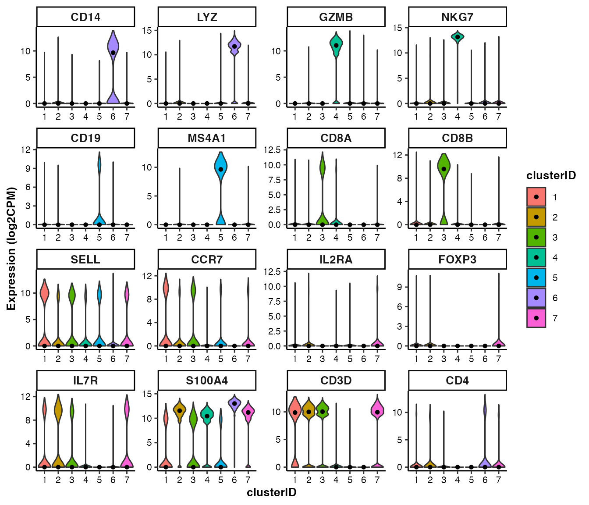
feature visualization: box plot
## Box plot of marker genes across clusters
feature_boxplot(input_eset = pbmc14k_clustered.eset, features = genes_of_interest, group_by = "clusterID", ncol = 4)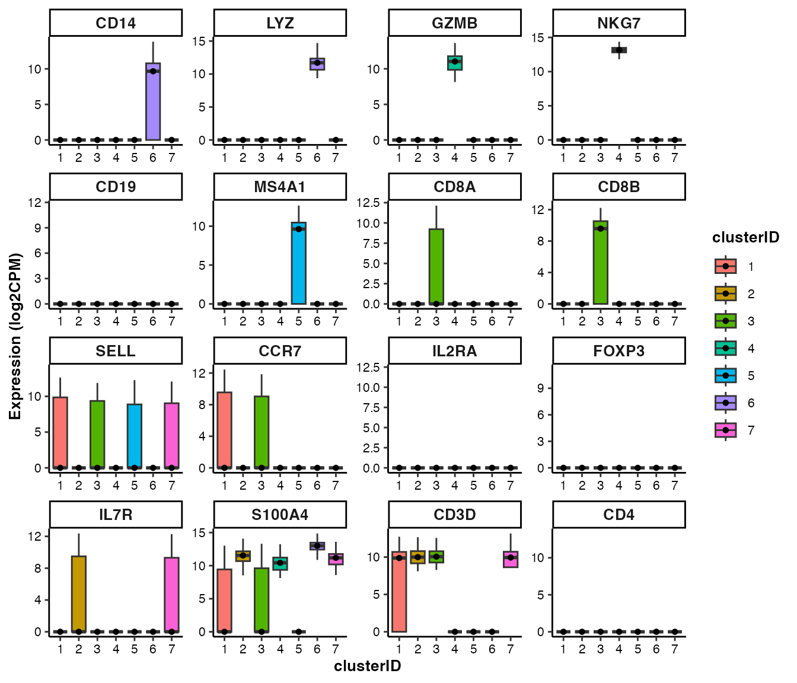
feature visualization: scatter plot
## UMAP scatter plot of marker genes
feature_scatterplot(input_eset = pbmc14k_clustered.eset, features = genes_of_interest, ncol = 4, location_x = "UMAP_1", location_y = "UMAP_2", point.size = 0.5, legend.key_height = 0.3, legend.key_width = 0.2, fontsize.legend_title = 8, fontsize.legend_text = 6, fontsize.axis_title = 8, legend.position = "none")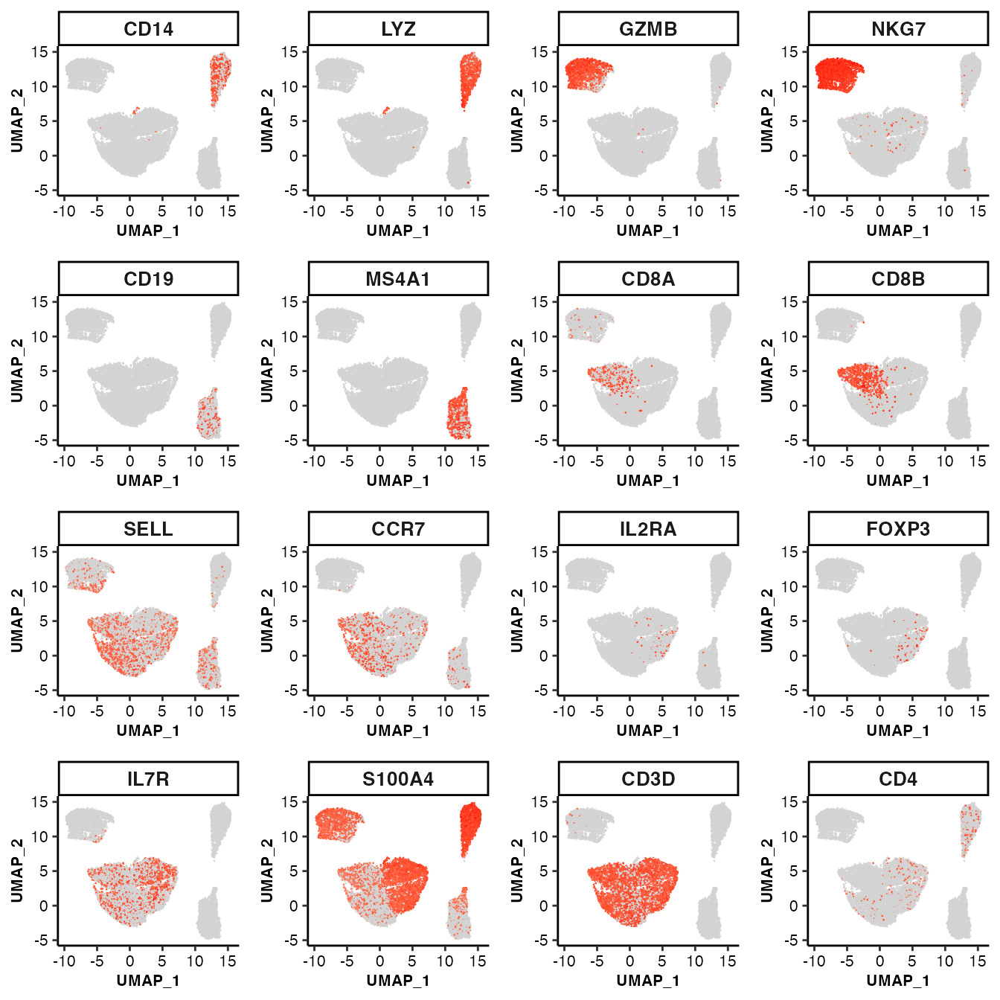
feature visualization: bubble plot
## Bubble plot of marker genes across clusters
feature_bubbleplot(input_eset = pbmc14k_clustered.eset, features = genes_of_interest, group_by = "clusterID", xlabel.angle = 45)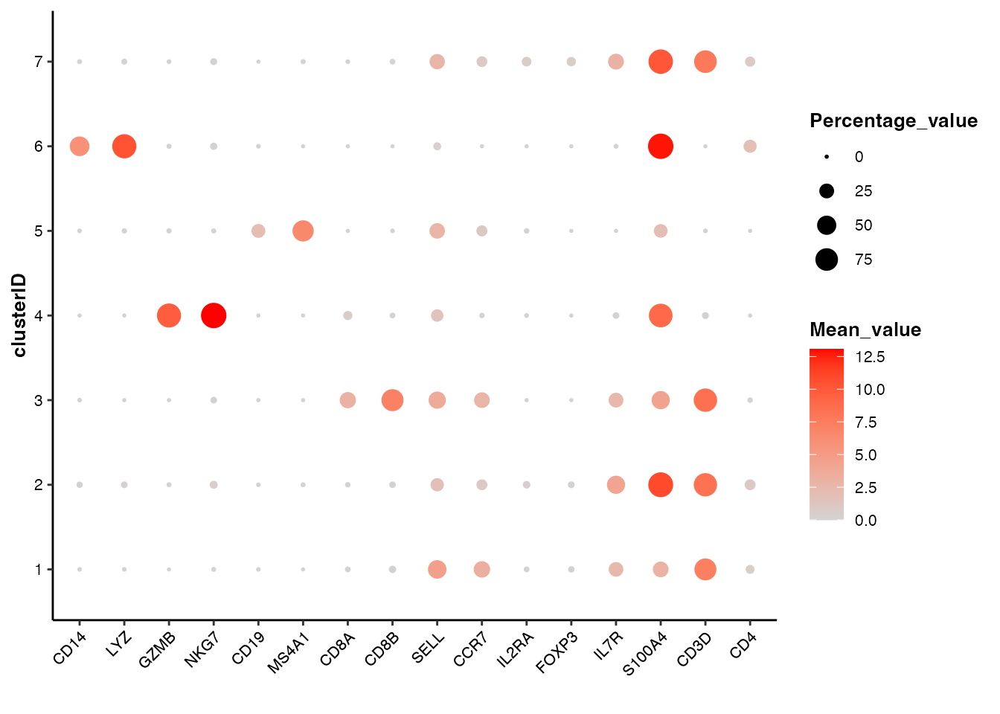
feature visualization: heatmap
## Heatmap of marker genes across clusters
feature_heatmap(input_eset = pbmc14k_clustered.eset, features = genes_of_interest, group_by = "clusterID", scale_method = "none", annotation_columns = c("trueLabel"))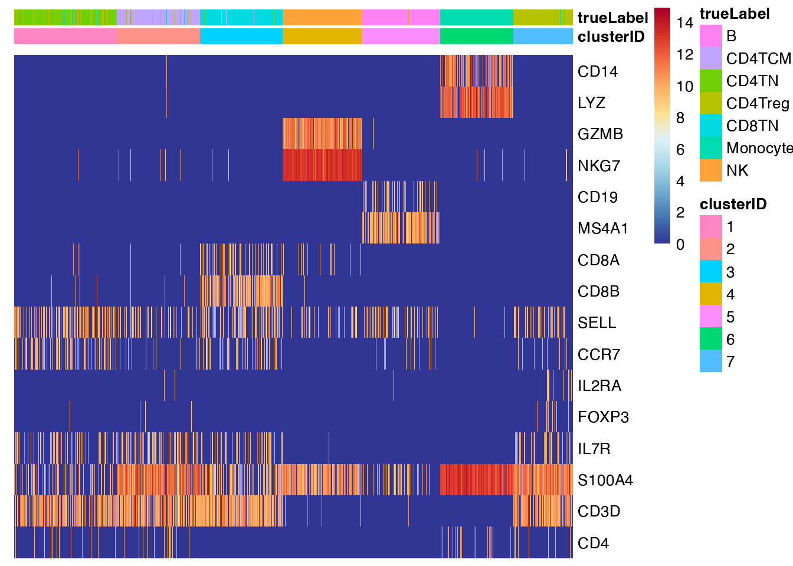
Unsupervised cell type annotation
scMINER provides a function, getDE(), to perform the
differential expression analysis and identify the markers of each
cluster. The getDE() function supports three different
methods to perform the differential expression analysis,
limma, wilcoxon and t.test. And
it allows the users to define the groups to compare in a highly flexible
way:
## 1. To perform differential expression analysis in a 1-vs-rest manner for all groups
de_res1 <- getDE(input_eset = pbmc14k_clustered.eset, group_by = "clusterID", use_method = "limma")
#> 7 groups were found in group_by column [ clusterID ].
#> Since no group was specified, the differential analysis will be conducted among all groups in the group_by column [ clusterID ] in the 1-vs-rest manner.
#> 1 / 7 : group 1 ( 1 ) vs the rest...
#> 2505 cells were found for g1.
#> 11100 cells were found for g0.
#> 2 / 7 : group 1 ( 2 ) vs the rest...
#> 2022 cells were found for g1.
#> 11583 cells were found for g0.
#> 3 / 7 : group 1 ( 3 ) vs the rest...
#> 2014 cells were found for g1.
#> 11591 cells were found for g0.
#> 4 / 7 : group 1 ( 4 ) vs the rest...
#> 1918 cells were found for g1.
#> 11687 cells were found for g0.
#> 5 / 7 : group 1 ( 5 ) vs the rest...
#> 1912 cells were found for g1.
#> 11693 cells were found for g0.
#> 6 / 7 : group 1 ( 6 ) vs the rest...
#> 1786 cells were found for g1.
#> 11819 cells were found for g0.
#> 7 / 7 : group 1 ( 7 ) vs the rest...
#> 1448 cells were found for g1.
#> 12157 cells were found for g0.
head(de_res1)
#> feature g1_tag g0_tag g1_avg g0_avg g1_pct g0_pct log2FC
#> 1251 CD3E 1 2,3,4,5,6,7 8.354660 3.874230 0.7920160 0.3819820 4.480430
#> 3820 LDHB 1 2,3,4,5,6,7 9.555670 5.614992 0.8806387 0.5458559 3.940678
#> 7765 TMEM66 1 2,3,4,5,6,7 8.604421 5.041570 0.8103792 0.5051351 3.562851
#> 1250 CD3D 1 2,3,4,5,6,7 7.281998 4.097082 0.6990020 0.3965766 3.184916
#> 1235 CD27 1 2,3,4,5,6,7 5.566280 2.428199 0.5481038 0.2482883 3.138081
#> 3992 LTB 1 2,3,4,5,6,7 10.436707 7.315803 0.9141717 0.6430631 3.120905
#> Pval FDR Zscore
#> 1251 2.225074e-308 0.000000e+00 37.53784
#> 3820 4.919041e-274 6.216262e-271 35.37012
#> 7765 1.509154e-228 9.535698e-226 32.27621
#> 1250 3.193659e-174 1.130044e-171 28.13981
#> 1235 7.997857e-219 4.716603e-216 31.57555
#> 3992 5.621459e-159 1.841756e-156 26.86509Here is an brief introduction to the results of
getDE():
- feature: feature name;
- g1_tag: a vector of clusters or subgroups involved in g1, the fore-ground group;
- g0_tag: a vector of clusters or subgroups involved in g0, the back-ground group;
- g1_avg: mean of gene expression of cells in g1;
- g0_tag: mean of gene expression of cells in g0;
- g1_pct: percentage of cells expressing the corresponding genes in group 1;
- g0_pct: percentage of cells expressing the corresponding genes in group 0;
- log2FC: log2Fold change of gene expression between g1 and g0;
- Pval: P values of g1-g0 comparison;
- FDR: FDR of g1-g0 comparison;
-
Zscore: Z score of g1-g0 comparison, signed by
log2FC;
## 2. To perform differential expression analysis in a 1-vs-rest manner for one specific group
de_res2 <- getDE(input_eset = pbmc14k_clustered.eset, group_by = "clusterID", g1 = c("1"), use_method = "limma")
## 3. To perform differential expression analysis in a rest-vs-1 manner for one specific group
de_res3 <- getDE(input_eset = pbmc14k_clustered.eset, group_by = "clusterID", g0 = c("1"), use_method = "limma")
## 4. To perform differential expression analysis in a 1-vs-1 manner for any two groups
de_res4 <- getDE(input_eset = pbmc14k_clustered.eset, group_by = "clusterID", g1 = c("1", "4"), g0 = c("3","5"), use_method = "limma")scMINER also provides a function, getTopFeatures(), to
easily extract the group-specific markers from the differential
expression result:
cluster_markers <- getTopFeatures(input_table = de_res1, number = 10, group_by = "g1_tag", sort_by = "log2FC", sort_decreasing = TRUE)
dim(cluster_markers)
#> [1] 16 11
head(cluster_markers)
#> feature g1_tag g0_tag g1_avg g0_avg g1_pct g0_pct log2FC
#> 1251 CD3E 1 2,3,4,5,6,7 8.354660 3.874230 0.7920160 0.3819820 4.480430
#> 3820 LDHB 1 2,3,4,5,6,7 9.555670 5.614992 0.8806387 0.5458559 3.940678
#> 7765 TMEM66 1 2,3,4,5,6,7 8.604421 5.041570 0.8103792 0.5051351 3.562851
#> 1250 CD3D 1 2,3,4,5,6,7 7.281998 4.097082 0.6990020 0.3965766 3.184916
#> 1235 CD27 1 2,3,4,5,6,7 5.566280 2.428199 0.5481038 0.2482883 3.138081
#> 3992 LTB 1 2,3,4,5,6,7 10.436707 7.315803 0.9141717 0.6430631 3.120905
#> Pval FDR Zscore
#> 1251 2.225074e-308 0.000000e+00 37.53784
#> 3820 4.919041e-274 6.216262e-271 35.37012
#> 7765 1.509154e-228 9.535698e-226 32.27621
#> 1250 3.193659e-174 1.130044e-171 28.13981
#> 1235 7.997857e-219 4.716603e-216 31.57555
#> 3992 5.621459e-159 1.841756e-156 26.86509Add cell type annotation to SparseEset object
Based on the supervised and unsupervised methods, we have annotated the cell types for each cluster. To add the cell type annotation information into the SparseEset object:
## Add cell type annotation to SparseEset object
pbmc14k_log2cpm_annotated.eset <- pbmc14k_clustered.eset
celltype_map <- c(`1`="CD4TN", `2`="CD4TCM", `3`="CD8TN", `4`="NK", `5`="B", `6`="Monocyte", `7`="CD4Treg")
pbmc14k_log2cpm_annotated.eset$cell_type <- as.character(celltype_map[pbmc14k_log2cpm_annotated.eset$clusterID])
head(pData(pbmc14k_log2cpm_annotated.eset))
#> trueLabel_full trueLabel projectID nUMI nFeature pctMito
#> CACTTTGACGCAAT CD14+ Monocyte Monocyte PBMC14k 764 354 0.01832461
#> GTTACGGAAACGAA CD14+ Monocyte Monocyte PBMC14k 956 442 0.01569038
#> CACTTATGAGTCGT CD14+ Monocyte Monocyte PBMC14k 629 323 0.02066773
#> GCATGTGATTCTGT CD14+ Monocyte Monocyte PBMC14k 875 427 0.02628571
#> TAGAATACGTATCG CD14+ Monocyte Monocyte PBMC14k 1060 445 0.03207547
#> CAAGAAGACCCTCA CD14+ Monocyte Monocyte PBMC14k 849 384 0.01531213
#> pctSpikeIn CellID UMAP_1 UMAP_2 clusterID cell_type
#> CACTTTGACGCAAT 0 CACTTTGACGCAAT 14.91650 13.04096 6 Monocyte
#> GTTACGGAAACGAA 0 GTTACGGAAACGAA 14.57031 10.27093 6 Monocyte
#> CACTTATGAGTCGT 0 CACTTATGAGTCGT 14.28869 13.61674 6 Monocyte
#> GCATGTGATTCTGT 0 GCATGTGATTCTGT 14.12546 13.36319 6 Monocyte
#> TAGAATACGTATCG 0 TAGAATACGTATCG 14.91227 11.19407 6 Monocyte
#> CAAGAAGACCCTCA 0 CAAGAAGACCCTCA 15.34154 12.25821 6 MonocyteThe draw_barplot() function can visualize the cell
composition of self-defined groups. We can use it to show the purity of
MICA clusters:
## Show the composition of true labels of cell types among the annotated cell types
draw_barplot(input_eset = pbmc14k_log2cpm_annotated.eset, group_by = "cell_type", color_by = "trueLabel_full", xlabel.angle = 45)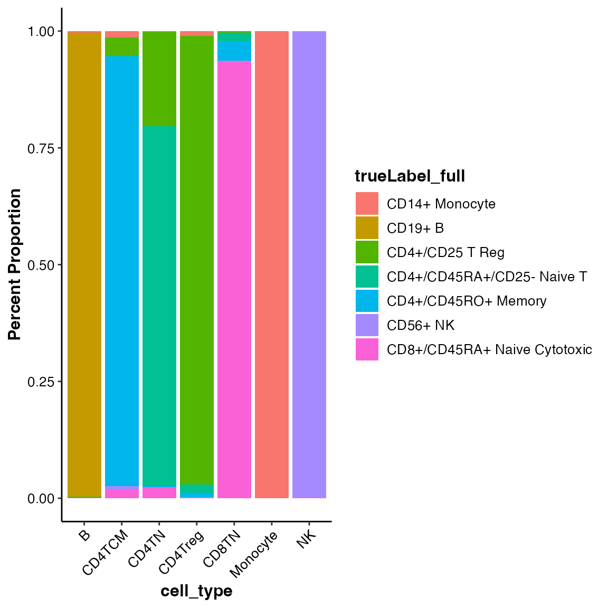
Don’t forget to save the SparseEset object after the cell type annotation is added.
saveRDS(pbmc14k_log2cpm_annotated.eset, file = "/your-path/PBMC14k/DATA/pbmc14k_log2cpm_annotated.eset")Network inference
scMINER constructs the cellular networks using SJARACNe, a scalable software tool for gene network reverse engineering from big data. Similar to MICA, SJARACNe is also a component of scMINER framework, and can work seamlessly with scMINER R package and SparseEset object.
Generate SJARACNe inputs
Network inference should be performed on groups of homogeneous cells. Usually it’s in a cluster- or cell type-specific basis. In this showcase, we know the true labels of cell types and would like to use them for grouping:
## Columns with any illegal characters can not be used for groupping
generateSJARACNeInput(input_eset = pbmc14k_log2cpm_annotated.eset, group_name = "trueLabel", sjaracne_dir = "/your-path/PBMC14k/SJARACNe", species_type = "hg", driver_type = "TF_SIG", downSample_N = NULL)IMPORTANT NOTE: Any illegal characters in path in group labels may cause issues in subsequent analysis. To avoid it, scMINER only accepts letters(A-Za-z), numbers(0-9), underscores(’_‘) and periods(’.’).
For big datasets, generateSJARACNeInput() provides an
argument, downSample_N, to allow you to down sample size of
each group. The default value of downSample_N is 1,000, any
group with >= 1,000 cells will be down-sampled to 1,000.
generateSJARACNeInput() creates a folder for each of the
groups availble in trueLabel column, and
generates the standard input files inside of it:
- a “
.exp.txt” file: a tab-separated genes/transcripts/proteins by cells/samples expression matrix with the first two columns being ID and symbol. - a “
TF” folder containing a “.tf.txt” file: a list of significant gene/transcript/protein IDs of TF drivers. - a “
SIG” folder containing a “.sig.txt” file: a list of significant gene/transcript/protein IDs of SIG drivers. - a bash script (
runSJARACNe.sh) to run SJARACNe. Further modification is needed to run it. - a json file (
config_cwlexec.json) containing parameters to run SJARACNe.
Run SJARACNe
As mentioned above, generateSJARACNeInput() generates a
runSJARACNe.sh file in the folder of each group. You will
need to make some modifications before you can run it:
remove unneeded lines: there are usually 4 lines in this file: the lines starting with
sjaracne lsfare the command lines to run on IBM LSF cluster, while those starting withsjaracne localare the command lines running on a local machine (Linux/OSX). Please select the lines based on your situation and remove the others.-
modify some key parameters:
- -n: number of bootstrap networks to generate. Default: 100.
-
-pc: p value threshold to select edges in building
consensus network. Default:
e-2for single-cell data,e-3for meta-cell data, ande-5for bulk sample data.
Please use sjaracne lsf -h or
sjaracne local -h to check more details of
arguments available in SJARACNe.
There is another file, config_cwlexec.json, available in
the folder. It contains the information (e.g. memory request for each
step of SJARACNe run) used for LSF job submission. This file is only
needed for LSF runs and the default values works well in most cases. If
you are running SJARACNe on a big dataset, you may need to request more
memory from it.
In this case, we use LSF to run the SJARACNe:
## Let's use B cell as an example
# For TF
sjaracne lsf -e /your-path/PBMC14k/SJARACNe/B/B.8572_1902.exp.txt -g /your-path/PBMC14k/SJARACNe/B/TF/B.835_1902.tf.txt -o /your-path/PBMC14k/SJARACNe/B/TF/bt100_pc001 -n 100 -pc 0.01 -j /your-path/PBMC14k/SJARACNe/B/config_cwlexec.json
# For SIG
sjaracne lsf -e /your-path/PBMC14k/SJARACNe/B/B.8572_1902.exp.txt -g /your-path/PBMC14k/SJARACNe/B/SIG/B.4148_1902.sig.txt -o /your-path/PBMC14k/SJARACNe/B/SIG/bt100_pc001 -n 100 -pc 0.01 -j /work-path/PBMC14k/SJARACNe/B/config_cwlexec.jsonWe manually created a folder named “bt100_pc001” in
both TF and SIG folders of each group, to save the networks generated
under 100 bootstraps (-n 100) and
0.01 consensus p value (-pc 0.01).
To run SJARACNe on a local machine:
## Let's use B cell as an example
# For TF
sjaracne local -e /your-path/PBMC14k/SJARACNe/B/B.8572_1902.exp.txt -g /your-path/PBMC14k/SJARACNe/B/TF/B.835_1902.tf.txt -o /your-path/PBMC14k/SJARACNe/B/TF/bt100_pc001 -n 100 -pc 0.01
# For SIG
sjaracne local -e /your-path/PBMC14k/SJARACNe/B/B.8572_1902.exp.txt -g /your-path/PBMC14k/SJARACNe/B/SIG/B.4148_1902.sig.txt -o /your-path/PBMC14k/SJARACNe/B/SIG/bt100_pc001 -n 100 -pc 0.01Quality control of networks
The core output of SJARACNe is the network file named
consensus_network_ncol_.txt.
network_format <- read.table(system.file("extdata/demo_pbmc14k/SJARACNe/B/TF/bt100_pc001/consensus_network_ncol_.txt", package = "scMINER"),
header = T, sep = "\t", quote = "", stringsAsFactors = F)
head(network_format)
#> source target source.symbol target.symbol MI pearson spearman slope
#> 1 AATF ACBD3 AATF ACBD3 0.0509 -0.0310 -0.0311 -0.0193
#> 2 AATF ADD3 AATF ADD3 0.0486 0.0228 0.0258 0.0307
#> 3 AATF AES AATF AES 0.0511 0.0311 0.0289 0.0668
#> 4 AATF AKR7A2 AATF AKR7A2 0.0498 0.0319 0.0366 0.0421
#> 5 AATF AL928768.3 AATF AL928768.3 0.0447 0.0247 0.0293 0.0335
#> 6 AATF ALG8 AATF ALG8 0.0479 0.0358 0.0373 0.0234
#> p.value
#> 1 0.1761
#> 2 0.3204
#> 3 0.1756
#> 4 0.1646
#> 5 0.2815
#> 6 0.1183As shown above, it contains 9 columns:
- source: ID of the source gene, can be the gene symbol;
- target: ID of the target gene, can be the gene symbol;
- source.symbol: symbol of the source gene;
- target.symbol: symbol of the target gene;
- MI: mutual information of source-gene pair;
- pearson: Pearson correlation coefficient, [-1,1]
- pearson: Spearman correlation coefficient, [-1,1]
-
slope: slop of the regression line, returned by
stats.linregression() - p.value: p-value for a hypothesis test whose null hypothesis is that the slope is zero, using Wald Test with t-distribution of the test statistic
To help assess the quality of SJARACNe networks, scMINER provides a
function drawNetworkQC():
## Network QC on single network file
network_stats <- drawNetworkQC(network_file = system.file("extdata/demo_pbmc14k/SJARACNe/B/TF/bt100_pc001/consensus_network_ncol_.txt", package = "scMINER"), generate_html = FALSE)
## Network QC on all network files under a directory
network_stats <- drawNetworkQC(sjaracne_dir = "/your-path/PBMC14K/SJARACNe", generate_html = FALSE) # Set `generate_html = TRUE` to generate html-format QC report for each network file
## The network QC statistics table is saved separately, for demonstration purposes.
network_stats <- readRDS(system.file("extdata/demo_pbmc14k/SJARACNe/network_stats.rds", package = "scMINER"))
head(network_stats)
#> network_tag network_node network_edge driver_count targetSize_mean
#> 1 B.SIG.bt100_pc001 8572 391889 4148 94.47662
#> 2 B.TF.bt100_pc001 8572 95341 835 114.18084
#> 3 CD4TCM.SIG.bt100_pc001 8660 382153 4209 90.79425
#> 4 CD4TCM.TF.bt100_pc001 8660 94319 838 112.55251
#> 5 CD4TN.SIG.bt100_pc001 8612 401658 4180 96.09043
#> 6 CD4TN.TF.bt100_pc001 8612 95152 831 114.50301
#> targetSize_median targetSize_minimum targetSize_maximum
#> 1 94.0 33 396
#> 2 96.0 64 913
#> 3 91.0 31 281
#> 4 95.5 60 689
#> 5 95.0 43 303
#> 6 99.0 64 743
#> network_path
#> 1 /Volumes/projects/scRNASeq/yu3grp/scMINER/NG_Revision/QPan/scminer_R/Datasets/PBMC14K/SJARACNe/B/SIG/bt100_pc001/sjaracne_workflow-df798096-8dee-4baf-8f70-891c689dc769/consensus_network_ncol_.txt
#> 2 /Volumes/projects/scRNASeq/yu3grp/scMINER/NG_Revision/QPan/scminer_R/Datasets/PBMC14K/SJARACNe/B/TF/bt100_pc001/sjaracne_workflow-fb2a69b9-f98e-47ff-87a0-6d538822fc6e/consensus_network_ncol_.txt
#> 3 /Volumes/projects/scRNASeq/yu3grp/scMINER/NG_Revision/QPan/scminer_R/Datasets/PBMC14K/SJARACNe/CD4TCM/SIG/bt100_pc001/sjaracne_workflow-424f1068-13d1-4f0e-9c26-56acd9a2027c/consensus_network_ncol_.txt
#> 4 /Volumes/projects/scRNASeq/yu3grp/scMINER/NG_Revision/QPan/scminer_R/Datasets/PBMC14K/SJARACNe/CD4TCM/TF/bt100_pc001/sjaracne_workflow-52b3cdf5-5914-4c8c-a77a-05f17c755d83/consensus_network_ncol_.txt
#> 5 /Volumes/projects/scRNASeq/yu3grp/scMINER/NG_Revision/QPan/scminer_R/Datasets/PBMC14K/SJARACNe/CD4TN/SIG/bt100_pc001/sjaracne_workflow-7b5bb68e-1de5-4d0e-80ec-8d8aa037866f/consensus_network_ncol_.txt
#> 6 /Volumes/projects/scRNASeq/yu3grp/scMINER/NG_Revision/QPan/scminer_R/Datasets/PBMC14K/SJARACNe/CD4TN/TF/bt100_pc001/sjaracne_workflow-89716541-eb53-435c-8a45-bab63d6b5198/consensus_network_ncol_.txtdrawNetworkQC() returns a summary table of key
statistics of SJARACNe networks. Empirically, a network with
50-300 target size is good.
Activity-related analysis
There are many signaling proteins (e.g., kinases), transcription factors, and other factors that are crucial drivers of phenotypes. These factors are not genetically or epigenetically altered, nor are they differentially expressed at the mRNA or protein level. Instead, they are altered by post-translational or other modifications, and are therefore termed hidden drivers. The gene activity-based analysis is proved to be an effective way to expose these hidden driver.
scMINER aims to expose the cell type-specific hidden drivers of various biological activities and provides a few useful functions to effortlessly calculate driver activities, identify the hidden drivers and visualize them in multiple ways.
Calculate driver activities
The driver activity estimation is one of the most important features of scMINER. Mathematically, the activity of one driver is a type of mean of the expressions of its targets. And biologically, the activity can be interpreted as a measure that describes how actively the driver functions, like the enzymes in digesting their subtracts, kinase in activating their downstream genes. Given the gene expression profiles and networks, scMINER can estimate the activities of some predefined drivers, including not only transcription factors (TFs) but also signaling genes (SIGs).
scMINER provides two functions, getActivity_individual()
and getActivity_inBatch(), to calculate the driver
activities individually or in batch:
getActivity_individual() is designed to calculate the
driver activities for individual group. It takes the
SparseEset and network files of
group-to-calculate as the inputs:
## Let's use B cell as an example
activity_B.eset <- getActivity_individual(input_eset = pbmc14k_log2cpm_annotated.eset[, pData(pbmc14k_log2cpm_annotated.eset)$trueLabel == "B"],
network_file.tf = system.file("extdata/demo_pbmc14k/SJARACNe/B/TF/bt100_pc001/consensus_network_ncol_.txt", package = "scMINER"),
network_file.sig = system.file("extdata/demo_pbmc14k/SJARACNe/B/SIG/bt100_pc001/consensus_network_ncol_.txt", package = "scMINER"),
driver_type = "TF_SIG")While getActivity_inBatch() is designed to calculate the
driver activities in batch. Instead of networks files, it takes the
directory that contains the network files of multiples groups and
automatically retrieve them for activity estimation:
## let's use B cell as an example
activity.eset <- getActivity_inBatch(input_eset = pbmc14k_log2cpm_annotated.eset,
sjaracne_dir = system.file("extdata/demo_pbmc14k/SJARACNe", package = "scMINER"),
group_name = "trueLabel", driver_type = "TF_SIG", activity_method = "mean", do.z_normalization = TRUE)
#> 7 groups were found in trueLabel ...
#> Checking network files for each group ...
#> Group 1 / 7 : Monocyte ...
#> TF network check passed!
#> SIG network check passed!
#> Group 2 / 7 : B ...
#> TF network check passed!
#> SIG network check passed!
#> Group 3 / 7 : CD4Treg ...
#> TF network check passed!
#> SIG network check passed!
#> Group 4 / 7 : CD4TN ...
#> TF network check passed!
#> SIG network check passed!
#> Group 5 / 7 : CD4TCM ...
#> TF network check passed!
#> SIG network check passed!
#> Group 6 / 7 : NK ...
#> TF network check passed!
#> SIG network check passed!
#> Group 7 / 7 : CD8TN ...
#> TF network check passed!
#> SIG network check passed!
#> Calculating activity for each group ...
#> Group 1 / 7 : Monocyte ...
#> Activity calculation is completed successfully!
#> Group 2 / 7 : B ...
#> Activity calculation is completed successfully!
#> Group 3 / 7 : CD4Treg ...
#> Activity calculation is completed successfully!
#> Group 4 / 7 : CD4TN ...
#> Activity calculation is completed successfully!
#> Group 5 / 7 : CD4TCM ...
#> Activity calculation is completed successfully!
#> Group 6 / 7 : NK ...
#> Activity calculation is completed successfully!
#> Group 7 / 7 : CD8TN ...
#> Activity calculation is completed successfully!
#> NAs were found in the activity matrix and have been replaced by the minimum value: -0.3968794 .Both functions return an eSet object of driver activities. The full
phenoData and part of featureData of the
activity eSet object is inherited from SparseEset
object.
Don’t forget to save the activity eSet object.
## Save activity eSet object
saveRDS(activity.eset, file = "/your-path/PBMC14k/DATA/pbmc14k_activity.eset")Differential activity analysis
scMINER provides a function, getDA(), to perform the
differential activity analysis and identify the cell type-specific
drivers. Similar to getDE(), getDA() also
allows you to compare different groups in a highly flexible way:
## 1. To perform differential expression analysis in a 1-vs-rest manner for all groups
da_res1 <- getDA(input_eset = activity.eset, group_by = "cell_type", use_method = "t.test")
#> 7 groups were found in group_by column [ cell_type ].
#> Since no group was specified, the differential analysis will be conducted among all groups in the group_by column [ cell_type ] in the 1-vs-rest manner.
#> 1 / 7 : group 1 ( B ) vs the rest...
#> 1912 cells were found for g1.
#> 11693 cells were found for g0.
#> 2 / 7 : group 1 ( CD4TCM ) vs the rest...
#> 2022 cells were found for g1.
#> 11583 cells were found for g0.
#> 3 / 7 : group 1 ( CD4TN ) vs the rest...
#> 2505 cells were found for g1.
#> 11100 cells were found for g0.
#> 4 / 7 : group 1 ( CD4Treg ) vs the rest...
#> 1448 cells were found for g1.
#> 12157 cells were found for g0.
#> 5 / 7 : group 1 ( CD8TN ) vs the rest...
#> 2014 cells were found for g1.
#> 11591 cells were found for g0.
#> 6 / 7 : group 1 ( Monocyte ) vs the rest...
#> 1786 cells were found for g1.
#> 11819 cells were found for g0.
#> 7 / 7 : group 1 ( NK ) vs the rest...
#> 1918 cells were found for g1.
#> 11687 cells were found for g0.
head(da_res1)
#> feature g1_tag g0_tag g1_avg
#> 4 AASDH_SIG B CD4TCM,CD4TN,CD4Treg,CD8TN,Monocyte,NK -0.008071658
#> 6 AATF_SIG B CD4TCM,CD4TN,CD4Treg,CD8TN,Monocyte,NK -0.051767485
#> 12 ABCB8_SIG B CD4TCM,CD4TN,CD4Treg,CD8TN,Monocyte,NK -0.077615607
#> 8 ABCA2_SIG B CD4TCM,CD4TN,CD4Treg,CD8TN,Monocyte,NK -0.081643603
#> 10 ABCB1_SIG B CD4TCM,CD4TN,CD4Treg,CD8TN,Monocyte,NK -0.134357577
#> 3 AARSD1_SIG B CD4TCM,CD4TN,CD4Treg,CD8TN,Monocyte,NK -0.126010447
#> g0_avg g1_pct g0_pct log2FC Pval FDR
#> 4 -0.1025141 0.43043933 0.13991277 0.094442475 2.225074e-308 0.000000e+00
#> 6 -0.1084165 0.21652720 0.08757376 0.056649005 3.918924e-189 5.878386e-189
#> 12 -0.1094585 0.35251046 0.14153767 0.031842866 3.623209e-12 3.952592e-12
#> 8 -0.1101867 0.10198745 0.15676045 0.028543082 1.914570e-58 2.418404e-58
#> 10 -0.1559384 0.04393305 0.06114770 0.021580866 8.079661e-27 9.233898e-27
#> 3 -0.1225746 0.04184100 0.08192936 -0.003435892 4.213744e-02 4.213744e-02
#> Zscore
#> 4 37.53784
#> 6 29.33316
#> 12 6.95115
#> 8 16.11775
#> 10 10.72137
#> 3 -2.03216
## 2. To perform differential expression analysis in a 1-vs-rest manner for one specific group
da_res2 <- getDA(input_eset = activity.eset, group_by = "cell_type", g1 = c("B"), use_method = "t.test")
## 3. To perform differential expression analysis in a rest-vs-1 manner for one specific group
da_res3 <- getDA(input_eset = activity.eset, group_by = "cell_type", g0 = c("B"), use_method = "t.test")
## 4. To perform differential expression analysis in a 1-vs-1 manner for any two groups
da_res4 <- getDA(input_eset = activity.eset, group_by = "cell_type", g1 = c("CD4Treg"), g0 = c("CD4TCM"), use_method = "t.test")The getTopFeatures() function can also be used to
effortlessly highlight the cell type-specific drivers from the
differential activity analysis results:
top_drivers <- getTopFeatures(input_table = da_res1, number = 10, group_by = "g1_tag", sort_by = "log2FC", sort_decreasing = TRUE)
dim(top_drivers)
#> [1] 16 11
head(top_drivers)
#> feature g1_tag g0_tag g1_avg
#> 4 AASDH_SIG B CD4TCM,CD4TN,CD4Treg,CD8TN,Monocyte,NK -0.008071658
#> 6 AATF_SIG B CD4TCM,CD4TN,CD4Treg,CD8TN,Monocyte,NK -0.051767485
#> 12 ABCB8_SIG B CD4TCM,CD4TN,CD4Treg,CD8TN,Monocyte,NK -0.077615607
#> 8 ABCA2_SIG B CD4TCM,CD4TN,CD4Treg,CD8TN,Monocyte,NK -0.081643603
#> 10 ABCB1_SIG B CD4TCM,CD4TN,CD4Treg,CD8TN,Monocyte,NK -0.134357577
#> 3 AARSD1_SIG B CD4TCM,CD4TN,CD4Treg,CD8TN,Monocyte,NK -0.126010447
#> g0_avg g1_pct g0_pct log2FC Pval FDR
#> 4 -0.1025141 0.43043933 0.13991277 0.094442475 2.225074e-308 0.000000e+00
#> 6 -0.1084165 0.21652720 0.08757376 0.056649005 3.918924e-189 5.878386e-189
#> 12 -0.1094585 0.35251046 0.14153767 0.031842866 3.623209e-12 3.952592e-12
#> 8 -0.1101867 0.10198745 0.15676045 0.028543082 1.914570e-58 2.418404e-58
#> 10 -0.1559384 0.04393305 0.06114770 0.021580866 8.079661e-27 9.233898e-27
#> 3 -0.1225746 0.04184100 0.08192936 -0.003435892 4.213744e-02 4.213744e-02
#> Zscore
#> 4 37.53784
#> 6 29.33316
#> 12 6.95115
#> 8 16.11775
#> 10 10.72137
#> 3 -2.03216Session info
sessioninfo::session_info()
#> ─ Session info ───────────────────────────────────────────────────────────────
#> setting value
#> version R version 4.4.1 (2024-06-14)
#> os macOS Sonoma 14.6.1
#> system aarch64, darwin20
#> ui X11
#> language en
#> collate en_US.UTF-8
#> ctype en_US.UTF-8
#> tz America/Chicago
#> date 2024-09-20
#> pandoc 3.1.11 @ /usr/local/bin/ (via rmarkdown)
#>
#> ─ Packages ───────────────────────────────────────────────────────────────────
#> package * version date (UTC) lib source
#> anndata * 0.7.5.6 2023-03-17 [2] CRAN (R 4.4.0)
#> assertthat 0.2.1 2019-03-21 [2] CRAN (R 4.4.0)
#> Biobase * 2.64.0 2024-04-30 [2] Bioconductor 3.19 (R 4.4.0)
#> BiocGenerics * 0.50.0 2024-04-30 [2] Bioconductor 3.19 (R 4.4.0)
#> bit 4.0.5 2022-11-15 [2] CRAN (R 4.4.0)
#> bit64 4.0.5 2020-08-30 [2] CRAN (R 4.4.0)
#> bslib 0.8.0 2024-07-29 [2] CRAN (R 4.4.0)
#> cachem 1.1.0 2024-05-16 [2] CRAN (R 4.4.0)
#> cli 3.6.3 2024-06-21 [2] CRAN (R 4.4.0)
#> colorspace 2.1-1 2024-07-26 [2] CRAN (R 4.4.0)
#> desc 1.4.3 2023-12-10 [2] CRAN (R 4.4.0)
#> digest 0.6.36 2024-06-23 [2] CRAN (R 4.4.0)
#> dplyr * 1.1.4 2023-11-17 [2] CRAN (R 4.4.0)
#> evaluate 0.24.0 2024-06-10 [2] CRAN (R 4.4.0)
#> fansi 1.0.6 2023-12-08 [2] CRAN (R 4.4.0)
#> farver 2.1.2 2024-05-13 [2] CRAN (R 4.4.0)
#> fastmap 1.2.0 2024-05-15 [2] CRAN (R 4.4.0)
#> fs 1.6.4 2024-04-25 [2] CRAN (R 4.4.0)
#> generics 0.1.3 2022-07-05 [2] CRAN (R 4.4.0)
#> ggplot2 * 3.5.1 2024-04-23 [2] CRAN (R 4.4.0)
#> glue 1.7.0 2024-01-09 [2] CRAN (R 4.4.0)
#> gridExtra 2.3 2017-09-09 [2] CRAN (R 4.4.0)
#> gtable 0.3.5 2024-04-22 [2] CRAN (R 4.4.0)
#> hdf5r * 1.3.11 2024-07-07 [2] CRAN (R 4.4.0)
#> highr 0.11 2024-05-26 [2] CRAN (R 4.4.0)
#> htmltools 0.5.8.1 2024-04-04 [2] CRAN (R 4.4.0)
#> htmlwidgets 1.6.4 2023-12-06 [2] CRAN (R 4.4.0)
#> igraph 2.0.3 2024-03-13 [2] CRAN (R 4.4.0)
#> jquerylib 0.1.4 2021-04-26 [2] CRAN (R 4.4.0)
#> jsonlite 1.8.8 2023-12-04 [2] CRAN (R 4.4.0)
#> knitr 1.48 2024-07-07 [2] CRAN (R 4.4.0)
#> labeling 0.4.3 2023-08-29 [2] CRAN (R 4.4.0)
#> lattice 0.22-6 2024-03-20 [2] CRAN (R 4.4.1)
#> lifecycle 1.0.4 2023-11-07 [2] CRAN (R 4.4.0)
#> limma 3.60.4 2024-07-17 [2] Bioconductor 3.19 (R 4.4.1)
#> magrittr 2.0.3 2022-03-30 [2] CRAN (R 4.4.0)
#> Matrix * 1.7-0 2024-04-26 [2] CRAN (R 4.4.1)
#> munsell 0.5.1 2024-04-01 [2] CRAN (R 4.4.0)
#> pheatmap 1.0.12 2019-01-04 [2] CRAN (R 4.4.0)
#> pillar 1.9.0 2023-03-22 [2] CRAN (R 4.4.0)
#> pkgconfig 2.0.3 2019-09-22 [2] CRAN (R 4.4.0)
#> pkgdown 2.1.0 2024-07-06 [2] CRAN (R 4.4.0)
#> plyr 1.8.9 2023-10-02 [2] CRAN (R 4.4.0)
#> png 0.1-8 2022-11-29 [2] CRAN (R 4.4.0)
#> R6 2.5.1 2021-08-19 [2] CRAN (R 4.4.0)
#> ragg 1.3.2 2024-05-15 [2] CRAN (R 4.4.0)
#> RColorBrewer 1.1-3 2022-04-03 [2] CRAN (R 4.4.0)
#> Rcpp 1.0.13 2024-07-17 [2] CRAN (R 4.4.0)
#> reshape2 1.4.4 2020-04-09 [2] CRAN (R 4.4.0)
#> reticulate 1.38.0 2024-06-19 [2] CRAN (R 4.4.0)
#> rlang 1.1.4 2024-06-04 [2] CRAN (R 4.4.0)
#> rmarkdown 2.27 2024-05-17 [2] CRAN (R 4.4.0)
#> rstudioapi 0.16.0 2024-03-24 [2] CRAN (R 4.4.0)
#> sass 0.4.9 2024-03-15 [2] CRAN (R 4.4.0)
#> scales 1.3.0 2023-11-28 [2] CRAN (R 4.4.0)
#> scMINER * 1.1.0 2024-09-20 [1] local
#> sessioninfo 1.2.2 2021-12-06 [2] CRAN (R 4.4.0)
#> statmod 1.5.0 2023-01-06 [2] CRAN (R 4.4.0)
#> stringi 1.8.4 2024-05-06 [2] CRAN (R 4.4.0)
#> stringr 1.5.1 2023-11-14 [2] CRAN (R 4.4.0)
#> systemfonts 1.1.0 2024-05-15 [2] CRAN (R 4.4.0)
#> textshaping 0.4.0 2024-05-24 [2] CRAN (R 4.4.0)
#> tibble 3.2.1 2023-03-20 [2] CRAN (R 4.4.0)
#> tidyselect 1.2.1 2024-03-11 [2] CRAN (R 4.4.0)
#> utf8 1.2.4 2023-10-22 [2] CRAN (R 4.4.0)
#> vctrs 0.6.5 2023-12-01 [2] CRAN (R 4.4.0)
#> withr 3.0.1 2024-07-31 [2] CRAN (R 4.4.0)
#> xfun 0.46 2024-07-18 [2] CRAN (R 4.4.0)
#> yaml 2.3.10 2024-07-26 [2] CRAN (R 4.4.0)
#>
#> [1] /private/var/folders/v0/njhqcmrs32xgrjgx2wz8d50r0000gp/T/RtmpmSBmO8/temp_libpathc1e57953063
#> [2] /Library/Frameworks/R.framework/Versions/4.4-arm64/Resources/library
#>
#> ──────────────────────────────────────────────────────────────────────────────